Ablate model
Understand the impact of each input feature on model performance.
[1]:
import collections
import itertools
import os
import matplotlib.pyplot as plt
import numpy as np
import pandas as pd
import pingouin as pg
import seaborn as sns
from scipy import stats
from sklearn import metrics
[2]:
sequences = pd.read_csv('data/interim/sequences_pMHC_split.csv', index_col='index')
[3]:
predictions = []
for path in (
'data/processed/TCRStructMap_predictions_on_sequences_pMHC_split.csv',
'data/processed/TCRStructMap_cdrs_peptide_predictions_on_sequences_pMHC_split.csv',
'data/processed/TCRStructMap_cdrs_mhc_pseudo_predictions_on_sequences_pMHC_split.csv',
):
model_name = os.path.basename(path).replace('_predictions_on_sequences_pMHC_split.csv', '')
model_predictions = pd.read_csv(path)
model_predictions['model_name'] = model_name
predictions.append(model_predictions)
predictions = pd.concat(predictions).reset_index(drop=True)
predictions = predictions.merge(sequences, how='left', left_on='index', right_index=True)
predictions = predictions[predictions['fold'] == predictions['sub_model_number']].reset_index(drop=True)
ROC
[4]:
roc_results = predictions.groupby(['model_name', 'fold']).apply(
lambda group: metrics.roc_curve(group['label'], group['prediction']),
include_groups=False,
)
roc_results.name = 'roc_curve'
roc_results = roc_results.reset_index()
[ ]:
roc_results[['fpr', 'tpr', 'threshold']] = roc_results['roc_curve'].apply(pd.Series)
[ ]:
roc_results['roc_auc'] = roc_results.apply(lambda row: metrics.auc(row['fpr'], row['tpr']), axis=1)
[7]:
plt.title('Comparison of different model architectures')
sns.boxplot(
roc_results,
x='model_name',
y='roc_auc',
order=sorted(roc_results['model_name'].unique(), reverse=True),
)
plt.axhline(0.5, color='r', linestyle='dashed')
plt.ylabel('ROC-AUC')
plt.xlabel('Model Name')
plt.xticks(rotation=45, ha='right')
plt.ylim([0.25, 1.0])
plt.show()
roc_results_agg = roc_results.groupby('model_name')['roc_auc'].agg(['mean', 'median', 'std'])
roc_results_agg = roc_results_agg.loc[sorted(roc_results_agg.index, reverse=True)]
roc_results_agg
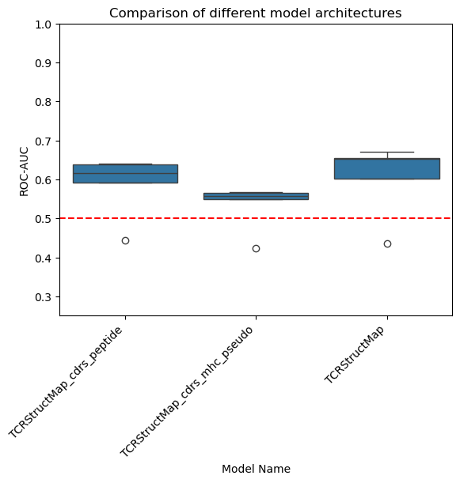
[7]:
| mean | median | std | |
|---|---|---|---|
| model_name | |||
| TCRStructMap_cdrs_peptide | 0.586127 | 0.616320 | 0.081990 |
| TCRStructMap_cdrs_mhc_pseudo | 0.533049 | 0.557731 | 0.061566 |
| TCRStructMap | 0.603445 | 0.652706 | 0.096951 |
[8]:
pg.friedman(roc_results, dv='roc_auc', within='model_name', subject='fold', method='f')
[8]:
| Source | W | ddof1 | ddof2 | F | p-unc | |
|---|---|---|---|---|---|---|
| Friedman | model_name | 0.76 | 1.6 | 6.4 | 12.666667 | 0.007191 |
[ ]:
groups = list(roc_results.set_index('fold').groupby('model_name')['roc_auc'])
groups = sorted(groups, reverse=True)
groups = [(group_name, group.sort_index()) for group_name, group in groups]
significance_level = 0.05 / len(groups)
results = collections.defaultdict(list)
for (group1_name, group1), (group2_name, group2) in itertools.combinations(groups, 2):
stat, p_val = stats.wilcoxon(group1, group2)
results['group1'].append(group1_name)
results['group2'].append(group2_name)
results['stat'].append(stat)
results['p_val'].append(p_val)
results['signficant'].append(p_val < significance_level)
pd.DataFrame(results)
| group1 | group2 | stat | p_val | signficant | |
|---|---|---|---|---|---|
| 0 | TCRStructMap_cdrs_peptide | TCRStructMap_cdrs_mhc_pseudo | 0.0 | 0.0625 | False |
| 1 | TCRStructMap_cdrs_peptide | TCRStructMap | 4.0 | 0.4375 | False |
| 2 | TCRStructMap_cdrs_mhc_pseudo | TCRStructMap | 0.0 | 0.0625 | False |
[10]:
model_groups = roc_results.groupby('model_name')
model_group_names = sorted(model_groups.groups.keys(), reverse=True)
fig, axes = plt.subplots(1, len(model_groups), figsize=(12, 6))
fig.suptitle('ROC Curves', fontsize=20)
for i, model_name in enumerate(model_group_names):
model_group = model_groups.get_group(model_name)
for fold, fold_group in model_group.groupby('fold'):
roc_auc = fold_group['roc_auc'].to_numpy()[0]
group = fold_group.explode(['tpr', 'fpr'])
axes[i].plot(group['fpr'], group['tpr'], label=f'Fold {fold} ROC-AUC: {roc_auc: .2f}')
if i == 0:
axes[i].set_ylabel(r'True positive rate ($\frac{TP}{TP + FN}$)', fontsize=12)
if i == len(model_groups) // 2:
axes[i].set_xlabel(r'False positive rate ($\frac{FP}{FP + TN}$)', fontsize=12)
axes[i].set_title(model_name)
axes[i].plot([0, 1], [0, 1], 'r--')
axes[i].legend()
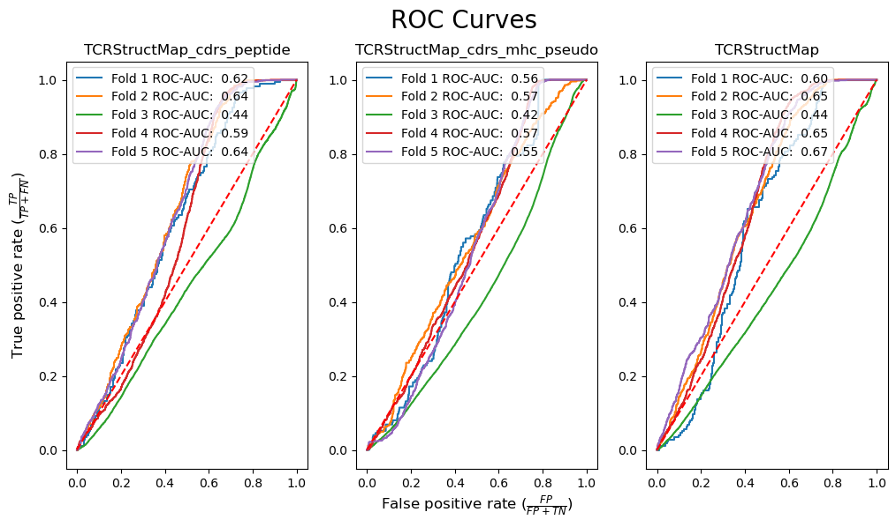
[11]:
model_groups = roc_results.groupby('model_name')
fpr_interp = np.linspace(0, 1, 100)
tpr_interp = {}
for model_name, model_group in model_groups:
tpr_interp[model_name] = {}
for fold, fold_group in model_group.groupby('fold'):
group = fold_group.explode(['tpr', 'fpr'])
tpr_interp[model_name][fold] = np.interp(fpr_interp, group['fpr'].apply(float), group['tpr'].apply(float))
[12]:
model_groups = roc_results.groupby('model_name')
model_group_names = sorted(model_groups.groups.keys(), reverse=True)
fig, axes = plt.subplots(1, len(model_groups), figsize=(12, 6))
fig.suptitle('ROC Curves (Interpolated)', fontsize=20)
for i, model_name in enumerate(model_group_names):
model_group = model_groups.get_group(model_name)
for fold, fold_group in model_group.groupby('fold'):
roc_auc = fold_group['roc_auc'].to_numpy()[0]
axes[i].plot(fpr_interp, tpr_interp[model_name][fold], label=f'Fold {fold} ROC-AUC: {roc_auc: .2f}')
if i == 0:
axes[i].set_ylabel(r'True positive rate ($\frac{TP}{TP + FN}$)', fontsize=12)
if i == len(model_groups) // 2:
axes[i].set_xlabel(r'False positive rate ($\frac{FP}{FP + TN}$)', fontsize=12)
axes[i].set_title(model_name)
axes[i].plot([0, 1], [0, 1], 'r--')
axes[i].legend()
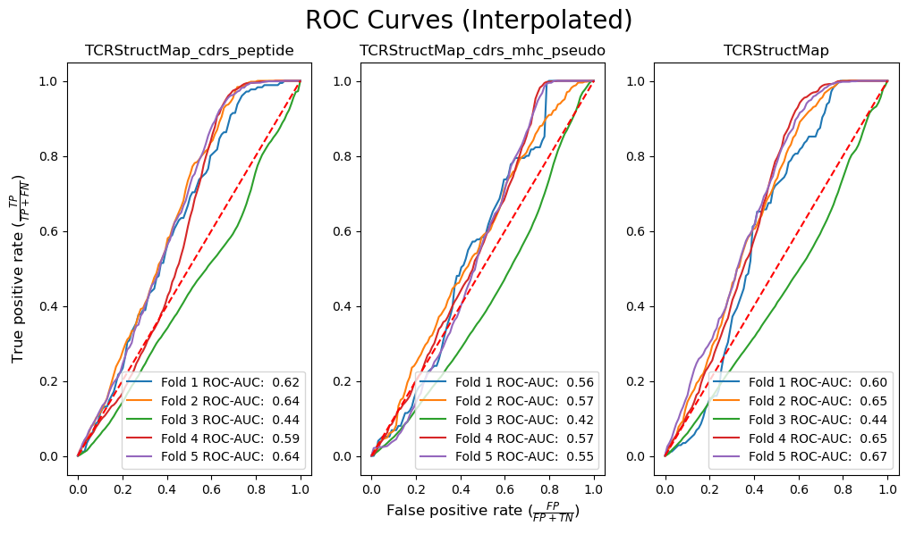
[13]:
model_groups = roc_results.groupby('model_name')
model_group_names = sorted(model_groups.groups.keys(), reverse=True)
for model_name in model_group_names:
model_group = model_groups.get_group(model_name)
tpr_mean = np.mean(np.array(list(tpr_interp[model_name].values())).T, axis=1)
tpr_std = np.std(np.array(list(tpr_interp[model_name].values())).T, axis=1)
roc_auc = metrics.auc(fpr_interp, tpr_mean)
plt.plot(fpr_interp, tpr_mean, label=f'{model_name} ROC-AUC: {roc_auc: .2f}')
plt.fill_between(fpr_interp, tpr_mean - tpr_std, tpr_mean + tpr_std, alpha=0.2)
plt.title('ROC Curves (Averaged)', fontsize=20)
plt.plot([0, 1], [0, 1], 'r--')
plt.xlabel(r'False positive rate ($\frac{FP}{FP + TN}$)')
plt.ylabel(r'True positive rate ($\frac{TP}{TP + FN}$)')
plt.legend()
plt.show()
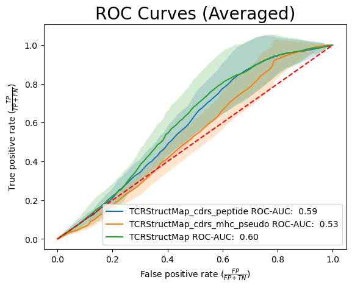
Precision-Recall
[14]:
pr_results = predictions.groupby(['model_name', 'fold']).apply(
lambda group: metrics.precision_recall_curve(group['label'], group['prediction']),
include_groups=False,
)
pr_results.name = 'pr_curve'
pr_results = pr_results.reset_index()
[15]:
pr_results[['precision', 'recall', 'threshold']] = pr_results['pr_curve'].apply(pd.Series)
[16]:
pr_results['pr_auc'] = pr_results.apply(lambda row: metrics.auc(row['recall'], row['precision']), axis=1)
[17]:
sns.boxplot(pr_results, x='model_name', y='pr_auc', order=sorted(pr_results['model_name'], reverse=True))
plt.axhline(0.2, color='r', linestyle='dashed')
plt.title('Comparison of different model architectures')
plt.ylim([0.0, 1.0])
plt.xlabel('Model Name')
plt.ylabel('PR-AUC')
plt.xticks(rotation=45, ha='right')
plt.show()
pr_results_agg = pr_results.groupby('model_name')['pr_auc'].agg(['mean', 'median', 'std'])
pr_results_agg = pr_results_agg.loc[sorted(pr_results_agg.index, reverse=True)]
pr_results_agg
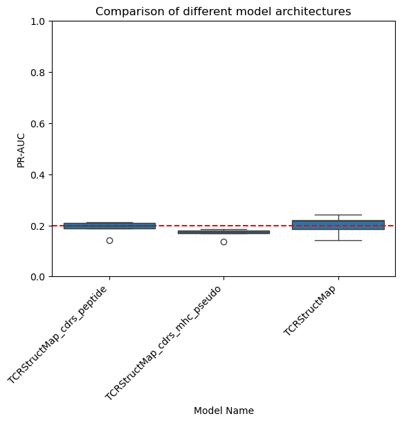
[17]:
| mean | median | std | |
|---|---|---|---|
| model_name | |||
| TCRStructMap_cdrs_peptide | 0.191086 | 0.199290 | 0.028440 |
| TCRStructMap_cdrs_mhc_pseudo | 0.168774 | 0.174134 | 0.018807 |
| TCRStructMap | 0.200914 | 0.218490 | 0.038677 |
[18]:
pg.friedman(pr_results, dv='pr_auc', within='model_name', subject='fold', method='f')
[18]:
| Source | W | ddof1 | ddof2 | F | p-unc | |
|---|---|---|---|---|---|---|
| Friedman | model_name | 0.76 | 1.6 | 6.4 | 12.666667 | 0.007191 |
[19]:
groups = list(pr_results.set_index('fold').groupby('model_name')['pr_auc'])
groups = sorted(groups, reverse=True)
groups = [(group_name, group.sort_index()) for group_name, group in groups]
significance_level = 0.05 / len(groups)
results = collections.defaultdict(list)
for (group1_name, group1), (group2_name, group2) in itertools.combinations(groups, 2):
stat, p_val = stats.wilcoxon(group1, group2)
results['group1'].append(group1_name)
results['group2'].append(group2_name)
results['stat'].append(stat)
results['p_val'].append(p_val)
results['signficant'].append(p_val < significance_level)
pd.DataFrame(results)
[19]:
| group1 | group2 | stat | p_val | signficant | |
|---|---|---|---|---|---|
| 0 | TCRStructMap_cdrs_peptide | TCRStructMap_cdrs_mhc_pseudo | 0.0 | 0.0625 | False |
| 1 | TCRStructMap_cdrs_peptide | TCRStructMap | 4.0 | 0.4375 | False |
| 2 | TCRStructMap_cdrs_mhc_pseudo | TCRStructMap | 0.0 | 0.0625 | False |
[20]:
model_groups = pr_results.groupby('model_name')
model_group_names = sorted(model_groups.groups.keys(), reverse=True)
fig, axes = plt.subplots(1, len(model_groups), figsize=(12, 6))
fig.suptitle('Precision-Recall Curves', fontsize=20)
for i, model_name in enumerate(model_group_names):
model_group = model_groups.get_group(model_name)
for fold, fold_group in model_group.groupby('fold'):
pr_auc = fold_group['pr_auc'].to_numpy()[0]
group = fold_group.explode(['recall', 'precision'])
axes[i].plot(group['recall'], group['precision'], label=f'Fold {fold} PR-AUC: {pr_auc: .2f}')
axes[i].set_title(model_name)
axes[i].plot([0, 1], [1 / 5, 1 / 5], 'r--')
if i == 0:
axes[i].set_ylabel('Precision', fontsize=12)
if i == len(model_groups) // 2:
axes[i].set_xlabel('Recall', fontsize=12)
axes[i].set_xlim([0, 1])
axes[i].set_ylim([0, 1])
axes[i].legend()
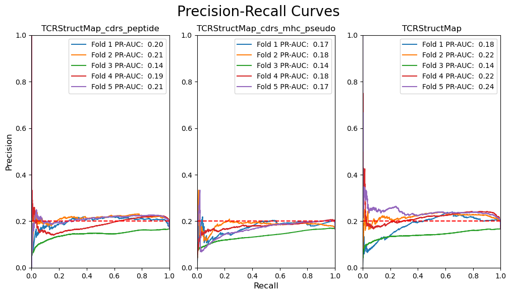
[21]:
model_groups = pr_results.groupby('model_name')
recall_interp = np.linspace(0, 1, 100)
precision_interp = {}
for model_name, model_group in model_groups:
precision_interp[model_name] = {}
for fold, fold_group in model_group.groupby('fold'):
group = fold_group.explode(['recall', 'precision'])
precision_interp[model_name][fold] = np.interp(
recall_interp,
group['recall'].apply(float)[::-1],
group['precision'].apply(float)[::-1],
)
[22]:
model_groups = pr_results.groupby('model_name')
model_group_names = sorted(model_groups.groups.keys(), reverse=True)
fig, axes = plt.subplots(1, len(model_groups), figsize=(12, 6))
fig.suptitle('Precision-Recall Curves (Interpolated)', fontsize=20)
for i, model_name in enumerate(model_group_names):
model_group = model_groups.get_group(model_name)
for fold, fold_group in model_group.groupby('fold'):
pr_auc = fold_group['pr_auc'].to_numpy()[0]
axes[i].plot(recall_interp, precision_interp[model_name][fold], label=f'Fold {fold} PR-AUC: {pr_auc: .2f}')
if i == 0:
axes[i].set_ylabel('Precision', fontsize=12)
if i == len(model_groups) // 2:
axes[i].set_xlabel('Recall', fontsize=12)
axes[i].set_title(model_name)
axes[i].plot([0, 1], [1 / 5, 1 / 5], 'r--')
axes[i].set_xlim([0, 1])
axes[i].set_ylim([0, 1])
axes[i].legend()
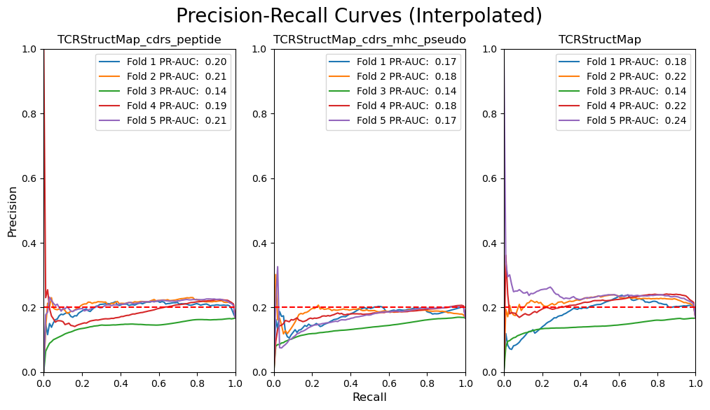
[23]:
model_groups = pr_results.groupby('model_name')
model_group_names = sorted(model_groups.groups.keys(), reverse=True)
for model_name in model_group_names:
precision_mean = np.mean(np.array(list(precision_interp[model_name].values())).T, axis=1)
precision_std = np.std(np.array(list(precision_interp[model_name].values())).T, axis=1)
pr_auc = metrics.auc(recall_interp, precision_mean)
plt.plot(recall_interp, precision_mean, label=f'{model_name} PR-AUC: {pr_auc: .2f}')
plt.fill_between(recall_interp, precision_mean - precision_std, precision_mean + precision_std, alpha=0.2)
plt.title('Precision-Recall Curves (Averaged)', fontsize=20)
plt.plot([0, 1], [1 / 5, 1 / 5], 'r--')
plt.xlabel('Recall')
plt.ylabel('Precision')
plt.xlim([0, 1])
plt.ylim([0, 1])
plt.legend()
plt.show()
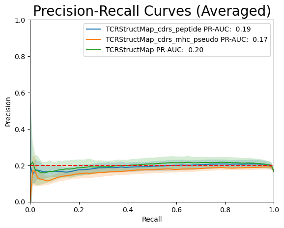
Balancing classes
[24]:
def down_sample_group(group: pd.DataFrame, random_state: int | np.random.Generator | None = None) -> pd.DataFrame:
positives = group[group['label'] == 1]
negatives = group[group['label'] == 0]
num_positives = len(positives)
num_negatives = len(negatives)
if num_positives > num_negatives:
return pd.concat([positives.sample(num_negatives, random_state=random_state), negatives])
if num_positives < num_negatives:
return pd.concat([positives, negatives.sample(num_positives, random_state=random_state)])
return group
rng = np.random.default_rng(123)
balanced_predictions = (
predictions.groupby(['model_name', 'fold'])
.apply(
down_sample_group,
random_state=rng,
include_groups=False,
)
.reset_index()
)
[25]:
pr_results_balanced = balanced_predictions.groupby(['model_name', 'fold']).apply(
lambda group: metrics.precision_recall_curve(group['label'], group['prediction']),
include_groups=False,
)
pr_results_balanced.name = 'pr_curve'
pr_results_balanced = pr_results_balanced.reset_index()
[26]:
pr_results_balanced[['precision', 'recall', 'threshold']] = pr_results_balanced['pr_curve'].apply(pd.Series)
[27]:
pr_results_balanced['pr_auc'] = pr_results_balanced.apply(
lambda row: metrics.auc(row['recall'], row['precision']), axis=1
)
[28]:
sns.boxplot(
pr_results_balanced,
x='model_name',
y='pr_auc',
order=sorted(pr_results_balanced['model_name'].unique(), reverse=True),
)
plt.axhline(0.5, color='r', linestyle='dashed')
plt.title('Comparison of different model architectures (balanced classes)')
plt.xlabel('Model Name')
plt.ylabel('PR-AUC')
plt.xticks(rotation=45, ha='right')
plt.ylim([0.25, 1.0])
plt.show()
pr_results_balanced_agg = pr_results_balanced.groupby('model_name')['pr_auc'].agg(['mean', 'median', 'std'])
pr_results_balanced_agg = pr_results_balanced_agg.loc[sorted(pr_results_balanced_agg.index, reverse=True)]
pr_results_balanced_agg
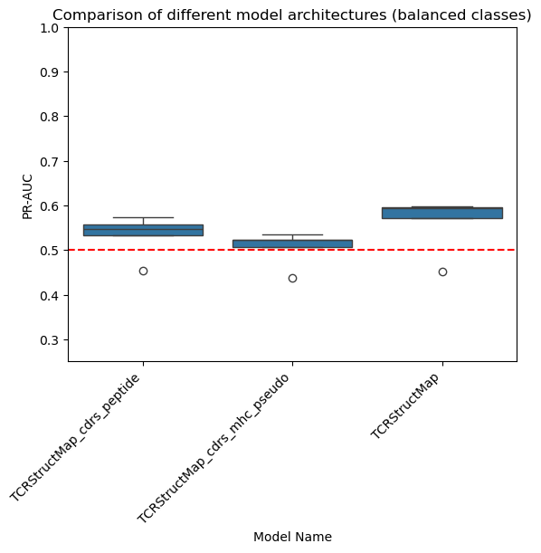
[28]:
| mean | median | std | |
|---|---|---|---|
| model_name | |||
| TCRStructMap_cdrs_peptide | 0.533032 | 0.547750 | 0.046505 |
| TCRStructMap_cdrs_mhc_pseudo | 0.504759 | 0.522282 | 0.038727 |
| TCRStructMap | 0.562168 | 0.594651 | 0.062898 |
[29]:
pg.friedman(pr_results_balanced, dv='pr_auc', within='model_name', subject='fold', method='f')
[29]:
| Source | W | ddof1 | ddof2 | F | p-unc | |
|---|---|---|---|---|---|---|
| Friedman | model_name | 0.84 | 1.6 | 6.4 | 21.0 | 0.001936 |
[30]:
groups = list(pr_results_balanced.set_index('fold').groupby('model_name')['pr_auc'])
groups = sorted(groups, reverse=True)
groups = [(group_name, group.sort_index()) for group_name, group in groups]
significance_level = 0.05 / len(groups)
results = collections.defaultdict(list)
for (group1_name, group1), (group2_name, group2) in itertools.combinations(groups, 2):
stat, p_val = stats.wilcoxon(group1, group2)
results['group1'].append(group1_name)
results['group2'].append(group2_name)
results['stat'].append(stat)
results['p_val'].append(p_val)
results['signficant'].append(p_val < significance_level)
pd.DataFrame(results)
[30]:
| group1 | group2 | stat | p_val | signficant | |
|---|---|---|---|---|---|
| 0 | TCRStructMap_cdrs_peptide | TCRStructMap_cdrs_mhc_pseudo | 0.0 | 0.0625 | False |
| 1 | TCRStructMap_cdrs_peptide | TCRStructMap | 1.0 | 0.1250 | False |
| 2 | TCRStructMap_cdrs_mhc_pseudo | TCRStructMap | 0.0 | 0.0625 | False |
[31]:
model_groups = pr_results_balanced.groupby('model_name')
model_group_names = sorted(model_groups.groups.keys(), reverse=True)
fig, axes = plt.subplots(1, len(model_groups), figsize=(12, 6))
fig.suptitle('Precision-Recall Curves (Balanced Hold-out set)', fontsize=20)
for i, model_name in enumerate(model_group_names):
model_group = model_groups.get_group(model_name)
for fold, fold_group in model_group.groupby('fold'):
roc_auc = fold_group['pr_auc'].to_numpy()[0]
group = fold_group.explode(['recall', 'precision'])
axes[i].plot(group['recall'], group['precision'], label=f'Fold {fold}: {roc_auc: .2f}')
if i == 0:
axes[i].set_ylabel('Precision', fontsize=12)
if i == len(model_groups) // 2:
axes[i].set_xlabel('Recall', fontsize=12)
axes[i].set_title(model_name)
axes[i].plot([0, 1], [0.5, 0.5], 'r--')
axes[i].set_xlim([0, 1])
axes[i].set_ylim([0.4, 1])
axes[i].legend()
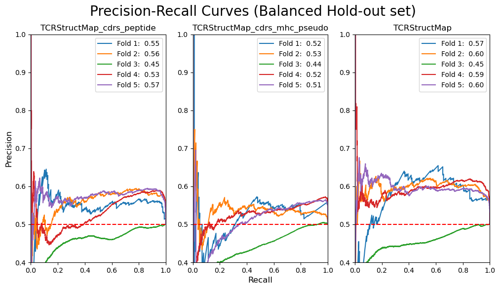
[32]:
model_groups = pr_results_balanced.groupby('model_name')
recall_interp = np.linspace(0, 1, 100)
precision_interp = {}
for model_name, model_group in model_groups:
precision_interp[model_name] = {}
for fold, fold_group in model_group.groupby('fold'):
group = fold_group.explode(['recall', 'precision'])
precision_interp[model_name][fold] = np.interp(
recall_interp,
group['recall'].apply(float)[::-1],
group['precision'].apply(float)[::-1],
)
[33]:
model_groups = pr_results_balanced.groupby('model_name')
model_group_names = sorted(model_groups.groups.keys(), reverse=True)
fig, axes = plt.subplots(1, len(model_groups), figsize=(12, 6))
fig.suptitle('Precision-Recall Curves (Balanced Hold-out set and Interpolated)', fontsize=20)
for i, model_name in enumerate(model_group_names):
model_group = model_groups.get_group(model_name)
for fold, fold_group in model_group.groupby('fold'):
pr_auc = fold_group['pr_auc'].to_numpy()[0]
axes[i].plot(recall_interp, precision_interp[model_name][fold], label=f'Fold {fold} PR-AUC: {pr_auc: .2f}')
if i == 0:
axes[i].set_ylabel('Precision', fontsize=12)
if i == len(model_groups) // 2:
axes[i].set_xlabel('Recall', fontsize=12)
axes[i].set_title(model_name)
axes[i].plot([0, 1], [0.5, 0.5], 'r--')
axes[i].set_xlim([0, 1])
axes[i].set_ylim([0.4, 1])
axes[i].legend()
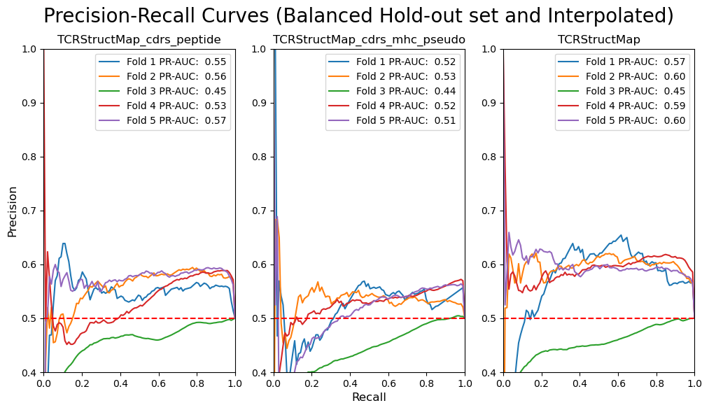
[34]:
model_groups = pr_results_balanced.groupby('model_name')
model_group_names = sorted(model_groups.groups.keys(), reverse=True)
for model_name in model_group_names:
precision_mean = np.mean(np.array(list(precision_interp[model_name].values())).T, axis=1)
precision_std = np.std(np.array(list(precision_interp[model_name].values())).T, axis=1)
pr_auc = metrics.auc(recall_interp, precision_mean)
plt.plot(recall_interp, precision_mean, label=f'{model_name} PR-AUC: {pr_auc: .2f}')
plt.fill_between(recall_interp, precision_mean - precision_std, precision_mean + precision_std, alpha=0.2)
plt.title('Precision-Recall Curves (Balanced Hold-out set and Averaged)', fontsize=20)
plt.plot([0, 1], [0.5, 0.5], 'r--')
plt.xlabel('Recall')
plt.ylabel('Precision')
plt.xlim([0, 1])
plt.ylim([0.4, 1])
plt.legend()
plt.show()
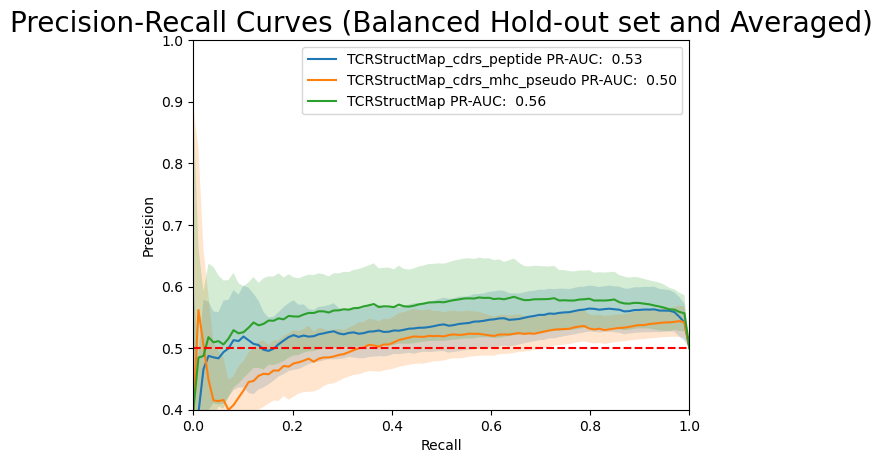
F1-Score
[35]:
THRESHOLD = 0.5
predictions['prediction_binary'] = (predictions['prediction'] > THRESHOLD).apply(int)
[36]:
f1_results = predictions.groupby(['model_name', 'fold']).apply(
lambda row: metrics.f1_score(row['label'], row['prediction_binary']),
include_groups=False,
)
f1_results.name = 'f1_score'
f1_results = f1_results.reset_index()
f1_results_table = f1_results.pivot_table(index='fold', columns='model_name', values='f1_score')
f1_results_table = f1_results_table[sorted(f1_results_table.columns, reverse=True)]
f1_results_table
[36]:
| model_name | TCRStructMap_cdrs_peptide | TCRStructMap_cdrs_mhc_pseudo | TCRStructMap |
|---|---|---|---|
| fold | |||
| 1 | 0.010811 | 0.000000 | 0.000000 |
| 2 | 0.004494 | 0.000000 | 0.030501 |
| 3 | 0.009268 | 0.026096 | 0.011831 |
| 4 | 0.014545 | 0.007111 | 0.051738 |
| 5 | 0.002561 | 0.002591 | 0.002608 |
[37]:
sns.boxplot(
f1_results,
x='model_name',
y='f1_score',
order=sorted(f1_results['model_name'].unique(), reverse=True),
)
plt.title('Comparison of different model architectures')
plt.xlabel('Model Name')
plt.ylabel('F1-Score')
plt.xticks(rotation=45, ha='right')
plt.show()
f1_results_agg = f1_results.groupby('model_name')['f1_score'].agg(['mean', 'median', 'std'])
f1_results_agg = f1_results_agg.loc[sorted(f1_results_agg.index, reverse=True)]
f1_results_agg
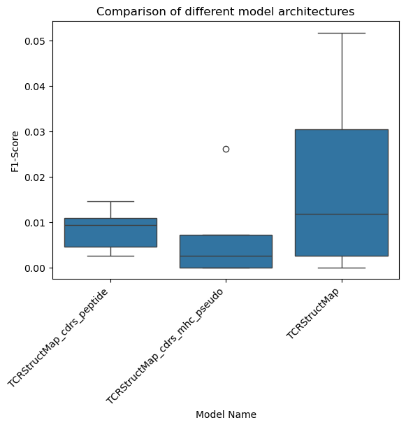
[37]:
| mean | median | std | |
|---|---|---|---|
| model_name | |||
| TCRStructMap_cdrs_peptide | 0.008336 | 0.009268 | 0.004839 |
| TCRStructMap_cdrs_mhc_pseudo | 0.007160 | 0.002591 | 0.010977 |
| TCRStructMap | 0.019336 | 0.011831 | 0.021706 |
[38]:
pg.friedman(f1_results, dv='f1_score', within='model_name', subject='fold', method='f')
[38]:
| Source | W | ddof1 | ddof2 | F | p-unc | |
|---|---|---|---|---|---|---|
| Friedman | model_name | 0.2 | 1.6 | 6.4 | 1.0 | 0.399098 |
[39]:
groups = list(f1_results.set_index('fold').groupby('model_name')['f1_score'])
groups = sorted(groups, reverse=True)
groups = [(group_name, group.sort_index()) for group_name, group in groups]
significance_level = 0.05 / len(groups)
results = collections.defaultdict(list)
for (group1_name, group1), (group2_name, group2) in itertools.combinations(groups, 2):
stat, p_val = stats.wilcoxon(group1, group2)
results['group1'].append(group1_name)
results['group2'].append(group2_name)
results['stat'].append(stat)
results['p_val'].append(p_val)
results['signficant'].append(p_val < significance_level)
pd.DataFrame(results)
[39]:
| group1 | group2 | stat | p_val | signficant | |
|---|---|---|---|---|---|
| 0 | TCRStructMap_cdrs_peptide | TCRStructMap_cdrs_mhc_pseudo | 6.0 | 0.8125 | False |
| 1 | TCRStructMap_cdrs_peptide | TCRStructMap | 3.0 | 0.3125 | False |
| 2 | TCRStructMap_cdrs_mhc_pseudo | TCRStructMap | 2.0 | 0.3750 | False |
Balancing classes
[40]:
balanced_predictions['prediction_binary'] = (balanced_predictions['prediction'] > THRESHOLD).apply(int)
[41]:
f1_results_balanced = balanced_predictions.groupby(['model_name', 'fold']).apply(
lambda row: metrics.f1_score(row['label'], row['prediction_binary']),
include_groups=False,
)
f1_results_balanced.name = 'f1_score'
f1_results_balanced = f1_results_balanced.reset_index()
f1_results_balanced_table = f1_results_balanced.pivot_table(index='fold', columns='model_name', values='f1_score')
f1_results_balanced_table = f1_results_balanced_table[sorted(f1_results_balanced_table.columns, reverse=True)]
f1_results_balanced_table
[41]:
| model_name | TCRStructMap_cdrs_peptide | TCRStructMap_cdrs_mhc_pseudo | TCRStructMap |
|---|---|---|---|
| fold | |||
| 1 | 0.011111 | 0.000000 | 0.000000 |
| 2 | 0.004608 | 0.000000 | 0.031746 |
| 3 | 0.009862 | 0.029458 | 0.012562 |
| 4 | 0.014787 | 0.007401 | 0.056990 |
| 5 | 0.002597 | 0.002608 | 0.002608 |
[42]:
sns.boxplot(
f1_results_balanced,
x='model_name',
y='f1_score',
order=sorted(f1_results_balanced['model_name'].unique(), reverse=True),
)
plt.title('Comparison of different model architectures (balanced classes)')
plt.xlabel('Model Name')
plt.ylabel('F1-Score')
plt.xticks(rotation=45, ha='right')
plt.show()
f1_results_balanced_agg = f1_results_balanced.groupby('model_name')['f1_score'].agg(['mean', 'median', 'std'])
f1_results_balanced_agg = f1_results_balanced_agg.loc[sorted(f1_results_balanced_agg.index, reverse=True)]
f1_results_balanced_agg
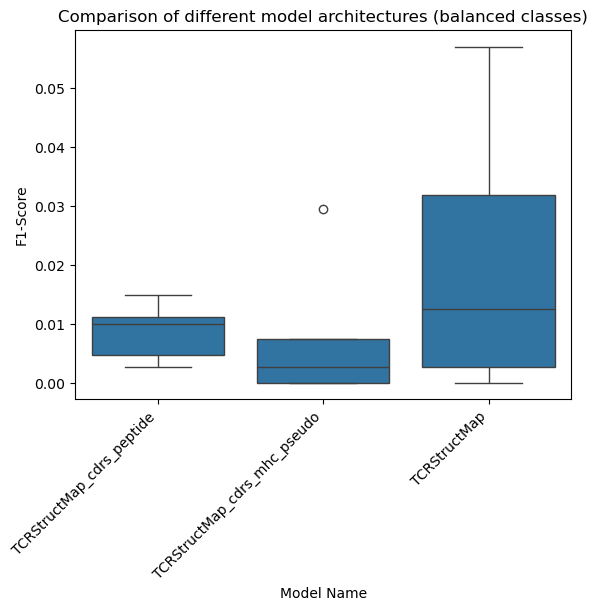
[42]:
| mean | median | std | |
|---|---|---|---|
| model_name | |||
| TCRStructMap_cdrs_peptide | 0.008593 | 0.009862 | 0.004953 |
| TCRStructMap_cdrs_mhc_pseudo | 0.007893 | 0.002608 | 0.012428 |
| TCRStructMap | 0.020781 | 0.012562 | 0.023775 |
[ ]:
pg.friedman(f1_results_balanced, dv='f1_score', within='model_name', subject='fold', method='f')
| Source | W | ddof1 | ddof2 | F | p-unc | |
|---|---|---|---|---|---|---|
| Friedman | model_name | 0.133333 | 1.6 | 6.4 | 0.615385 | 0.535383 |
[44]:
groups = list(f1_results_balanced.set_index('fold').groupby('model_name')['f1_score'])
groups = sorted(groups, reverse=True)
groups = [(group_name, group.sort_index()) for group_name, group in groups]
significance_level = 0.05 / len(groups)
results = collections.defaultdict(list)
for (group1_name, group1), (group2_name, group2) in itertools.combinations(groups, 2):
stat, p_val = stats.wilcoxon(group1, group2)
results['group1'].append(group1_name)
results['group2'].append(group2_name)
results['stat'].append(stat)
results['p_val'].append(p_val)
results['signficant'].append(p_val < significance_level)
pd.DataFrame(results)
[44]:
| group1 | group2 | stat | p_val | signficant | |
|---|---|---|---|---|---|
| 0 | TCRStructMap_cdrs_peptide | TCRStructMap_cdrs_mhc_pseudo | 6.0 | 0.8125 | False |
| 1 | TCRStructMap_cdrs_peptide | TCRStructMap | 3.0 | 0.3125 | False |
| 2 | TCRStructMap_cdrs_mhc_pseudo | TCRStructMap | 1.0 | 0.5000 | False |
Comparison of prediction results to mimimum distance between the peptides and the training set
[45]:
with open('data/interim/peptides.txt') as fh:
peptide_key = np.array(fh.read().rstrip().split('\n'))
peptide_distances = np.loadtxt('data/interim/peptide_distances.txt', dtype=int)
[46]:
def get_minimum_peptide_distance(peptide_sequence: str, training_peptides: np.ndarray) -> int:
if peptide_sequence not in peptide_key:
return np.nan
training_key_idxs = np.where(np.isin(peptide_key, training_peptides))[0]
peptide_index = np.where(peptide_sequence == peptide_key)[0][0]
return np.min(peptide_distances[peptide_index][training_key_idxs])
[47]:
peptide_folds = predictions[['peptide', 'fold']].drop_duplicates()
peptide_folds['min_peptide_distance'] = peptide_folds.apply(
lambda row: get_minimum_peptide_distance(row.peptide, sequences[sequences['fold'] != row.fold]['peptide'].unique()),
axis=1,
)
[48]:
predictions = predictions.merge(peptide_folds, how='left', on=['peptide', 'fold'])
[49]:
sns.histplot(predictions, x='min_peptide_distance', bins=10)
plt.xlabel('Minimum levenshtein distance to a peptide in the training data')
plt.show()
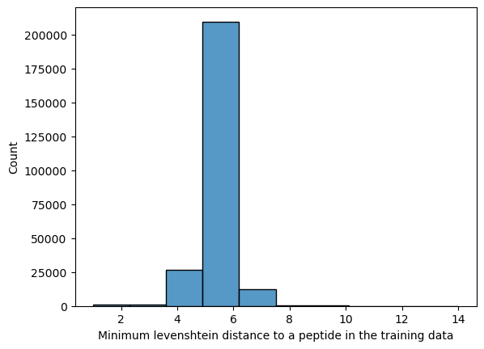
[50]:
peptide_distance_roc_aucs = predictions.groupby(['model_name', 'fold', 'min_peptide_distance']).apply(
lambda group: metrics.roc_auc_score(group['label'], group['prediction']),
include_groups=False,
)
peptide_distance_roc_aucs.name = 'roc_auc'
peptide_distance_roc_aucs = peptide_distance_roc_aucs.reset_index()
[51]:
ax = sns.lmplot(
peptide_distance_roc_aucs,
x='min_peptide_distance',
y='roc_auc',
hue='model_name',
hue_order=sorted(peptide_distance_roc_aucs['model_name'].unique(), reverse=True),
)
for model_name in peptide_distance_roc_aucs['model_name'].unique():
subset = peptide_distance_roc_aucs[peptide_distance_roc_aucs['model_name'] == model_name]
slope, intercept, r_value, p_value, std_err = stats.linregress(subset['min_peptide_distance'], subset['roc_auc'])
equation = f'y = {slope:.2f}x + {intercept:.2f}'
x_pos = subset['min_peptide_distance'].max() + 0.25
y_pos = slope * x_pos + intercept
plt.text(x_pos, y_pos, equation, color='black')
ax.legend.set_title('Model Name')
plt.xlabel('Minimum levenshtein distance to a peptide in the training data')
plt.ylabel('ROC-AUC')
plt.show()
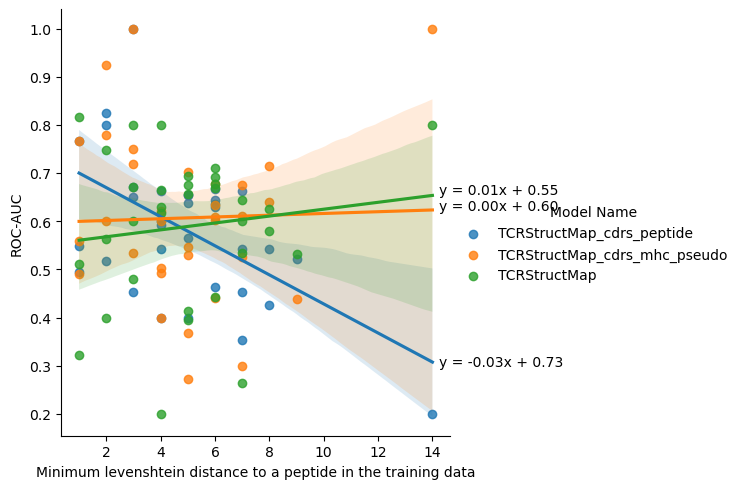
[ ]:
peptide_distance_roc_aucs_lines = peptide_distance_roc_aucs.groupby(['model_name', 'fold']).apply(
lambda group: stats.linregress(group['min_peptide_distance'], group['roc_auc']),
include_groups=False,
)
peptide_distance_roc_aucs_lines.name = 'line'
peptide_distance_roc_aucs_lines = peptide_distance_roc_aucs_lines.reset_index()
peptide_distance_roc_aucs_lines[['slope', 'intercept', 'r_value', 'p_value', 'std_err']] = (
peptide_distance_roc_aucs_lines['line'].apply(pd.Series)
)
[53]:
sns.boxplot(
peptide_distance_roc_aucs_lines,
x='model_name',
y='slope',
order=sorted(peptide_distance_roc_aucs_lines['model_name'].unique(), reverse=True),
)
plt.title('Comparison of slope generalisability')
plt.ylabel('Slope')
plt.xlabel('Model Name')
plt.xticks(rotation=45, ha='right')
plt.show()
peptide_distance_roc_aucs_lines_agg = peptide_distance_roc_aucs_lines.groupby('model_name')['slope'].agg(
['mean', 'median', 'std'],
)
peptide_distance_roc_aucs_lines_agg = peptide_distance_roc_aucs_lines_agg.loc[
sorted(peptide_distance_roc_aucs_lines_agg.index, reverse=True)
]
peptide_distance_roc_aucs_lines_agg
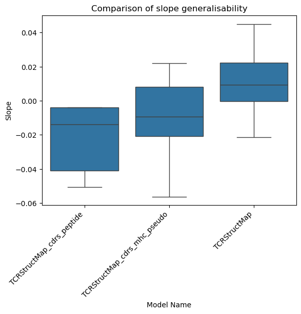
[53]:
| mean | median | std | |
|---|---|---|---|
| model_name | |||
| TCRStructMap_cdrs_peptide | -0.022713 | -0.013862 | 0.021791 |
| TCRStructMap_cdrs_mhc_pseudo | -0.011240 | -0.009352 | 0.030029 |
| TCRStructMap | 0.010962 | 0.009243 | 0.024860 |
[54]:
pg.friedman(peptide_distance_roc_aucs_lines, dv='slope', within='model_name', subject='fold', method='f')
[54]:
| Source | W | ddof1 | ddof2 | F | p-unc | |
|---|---|---|---|---|---|---|
| Friedman | model_name | 0.16 | 1.6 | 6.4 | 0.761905 | 0.47663 |
[55]:
groups = list(peptide_distance_roc_aucs_lines.set_index('fold').groupby('model_name')['slope'])
groups = sorted(groups, reverse=True)
groups = [(group_name, group.sort_index()) for group_name, group in groups]
significance_level = 0.05 / len(groups)
results = collections.defaultdict(list)
for (group1_name, group1), (group2_name, group2) in itertools.combinations(groups, 2):
stat, p_val = stats.wilcoxon(group1, group2)
results['group1'].append(group1_name)
results['group2'].append(group2_name)
results['stat'].append(stat)
results['p_val'].append(p_val)
results['signficant'].append(p_val < significance_level)
pd.DataFrame(results)
[55]:
| group1 | group2 | stat | p_val | signficant | |
|---|---|---|---|---|---|
| 0 | TCRStructMap_cdrs_peptide | TCRStructMap_cdrs_mhc_pseudo | 5.0 | 0.625 | False |
| 1 | TCRStructMap_cdrs_peptide | TCRStructMap | 1.0 | 0.125 | False |
| 2 | TCRStructMap_cdrs_mhc_pseudo | TCRStructMap | 5.0 | 0.625 | False |